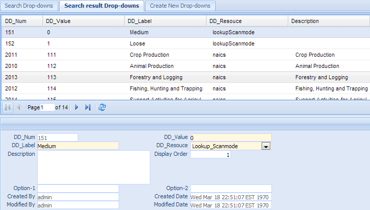
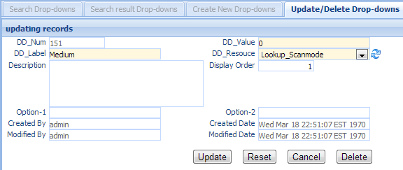
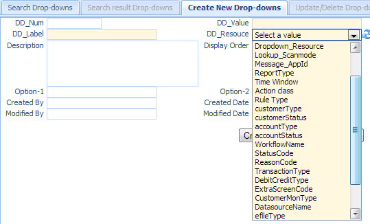

Drop-downs¶
Drop-downs define key/value pair used within the system. Click the Drop-downs in the left navigation menu under Resource, a new Drop-downs Tab folder will be created in the right panel.
There are 3 sub-Tab folders, Search Drop-downs, Search Result Drop-downs and Create New Drop-downs.
Note
Some of the fields is only used by sanction List file format, while other fields is only used by batch file format .
Search Drop-downs¶
Search Criteria =============== ================================================================================ Field Name Description =============== ================================================================================ DD_Num Dropdown unique record identifier DD_Value The value of the dropdown list DD_Resouce Type of the dropdown Description Short description DD_Label The Lable of the dropdown list CreatedByDate Date and Time when this entry is created CreatedByUser User who create this entry. ModifiedByDate Last modified date and time. ModifiedByUser Last modified user. AND Select AND radio box if you want those criteria add together. OR Select OR radio box if you want to get the result if either criteria meet =============== ================================================================================
Functional buttons¶
- Find: – click Find button to search.
- Clear:– click Clear button to clear all the criteria.
Search Result Drop-downs¶
The top part is the table, shows the list of the Drop-downs that meet the search criteria. The bottom part is the details of the selected entry
Update/Delete Drop-downs¶
Double Click the selected record in the table to modify this entry. A new Tab folder Update/Delete Drop-downs will be added, as show below.
Functional buttons¶
- Update: – make changes on the Drop-downs, then save and switch back to “Search result Drop-downs” Tab. Some of the fields in this form are read only, like dd_num, created/modified user and date.
- Reset:– reset the data to its initial value, discard all the changes.
- Cancel:– Cancel this change and switch back to “Search result Drop-downs” Tab.
- Delete:– Delete this entry, then switch back to “Search result Drop-downs” Tab.
Create New Drop-downs¶
Select the “Create New Drop-downs” Tab to create a new entry.
| Field Name | Description |
|---|---|
| DD_Num | Dropdown unique record identifier |
| DD_Value | The value of the dropdown list |
| DD_Resouce | Type of the dropdown |
| Description | Short description |
| DD_Label | The Lable of the dropdown list |
| CreatedByDate | Date and Time when the entry is created. It is a read only field. |
| CreatedByUser | User who create this entry. It is a read only field. |
| ModifiedByDate | Last modified date and time; It is a read only field. |
| ModifiedByUser | Last modified user; It is a read only field. |
Functional buttons¶
- Create: – Click the Create button to create a new file format. Name entry and switch to “Search result Drop-downs” Tab. dd-value is a mandatory field, if it is empty, an error will show
- Clear:– Click the Clear button to clear all the fields
- Cancel:– Click the Cancel button to cancel operation and switch back to “Search result Drop-downs” Tab.